EE 779 : Assignment 2 | Q-2
Meet Pragnesh Shah, 13D070003
Contents
close all; clear all; % Read input data and converting to complex signals I01 = getdata('../data/I01.DAT')'; I10 = getdata('../data/I10.DAT')'; I40 = getdata('../data/I40.DAT')'; R01 = getdata('../data/R01.DAT')'; R10 = getdata('../data/R10.DAT')'; R40 = getdata('../data/R40.DAT')'; x01 = R01 + I01*1i; x10 = R10 + I10*1i; x40 = R40 + I40*1i; input_data = [x01,x10,x40]; noise_vals_k = [0.01,0.10,0.40];
(a): Periodogram with K = 0.01
fft_len = 1024; N = length(x01); % Zero padding signal x_padded = zeros(fft_len,1); x_padded(1:N) = x01(1:N); fft_xN = fftshift(fft(x_padded, fft_len)); periodogram_psd = (abs(fft_xN).^2)/N; % Plotting figure('units','normalized','outerposition',[0 0 1 1]); plot(20*log10(periodogram_psd)); title('Power spectral estimate: Periodogram') ylabel('dB') xlabel('n(1:1024)') xlim([0 1024])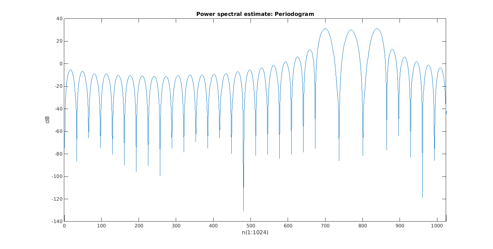
b)i) AR modelling using autocorrelation method
Calculate N1 and N2 and the y and Y matrices. For the Autocorrelation method: N1=1, N2 = N+p Compute the optimal value of the AR coefficients
for k = 1:length(noise_vals_k) x = input_data(:,k); AR_autocorr_psd = AR_autocorrelation_spectrum(x,7,noise_vals_k(k)); figure('units','normalized','outerposition',[0 0 1 1]); plot(20*log10(AR_autocorr_psd)); title(['Power spectral estimate: AR autocorrelation method',num2str(noise_vals_k(k))]) ylabel('dB') xlabel('n(1:1024)') xlim([0 1024]) end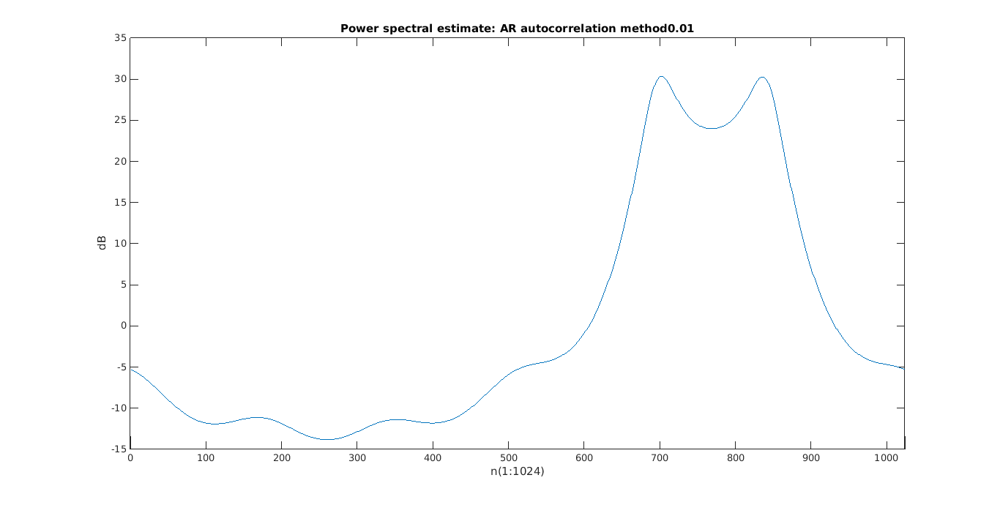 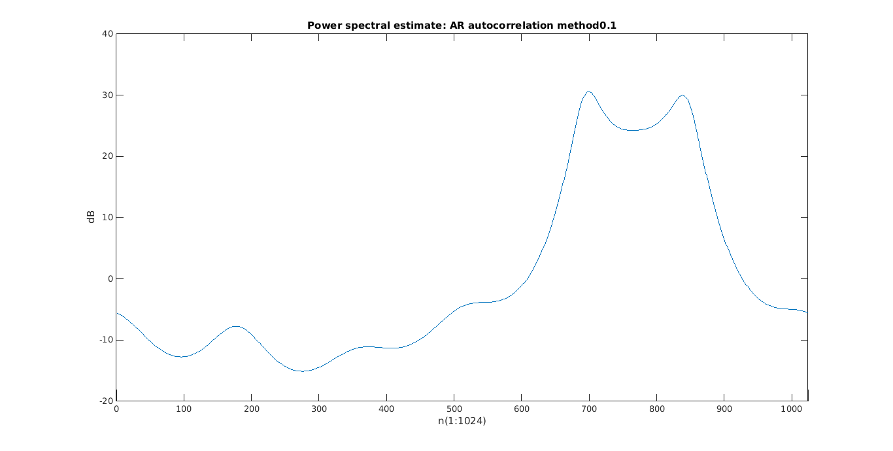 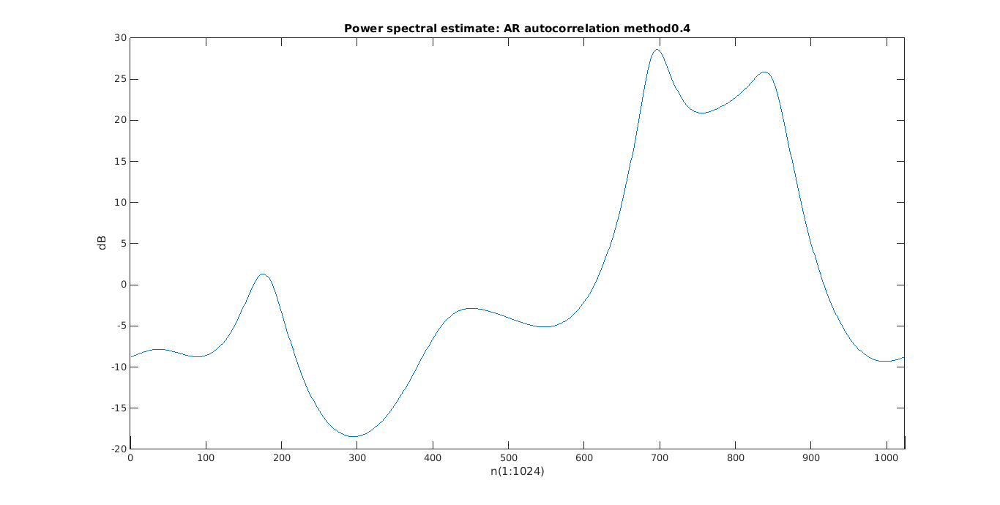
b)ii) AR modelling using autocorrelation method
Calculate N1 and N2 and the y and Y matrices. For the Autocorrelation method: N1=p+1, N2 = N Compute the optimal value of the AR coefficients
for k = 1:length(noise_vals_k) x = input_data(:,k); AR_covar_psd = AR_covariance_spectrum(x,7,noise_vals_k(k)); figure('units','normalized','outerposition',[0 0 1 1]); plot(20*log10(AR_covar_psd)); title(['Power spectral estimate: AR covariance method',num2str(noise_vals_k(k))]) ylabel('dB') xlabel('n(1:1024)') xlim([0 1024]) end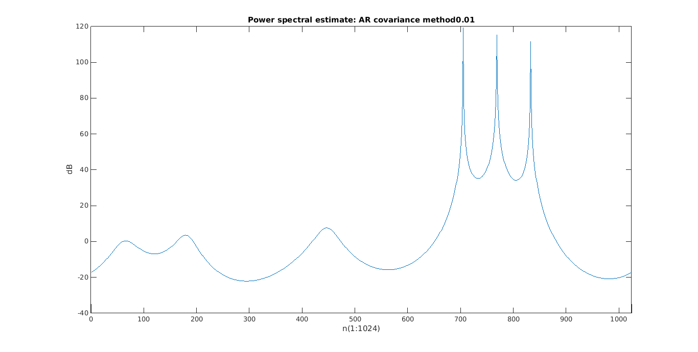 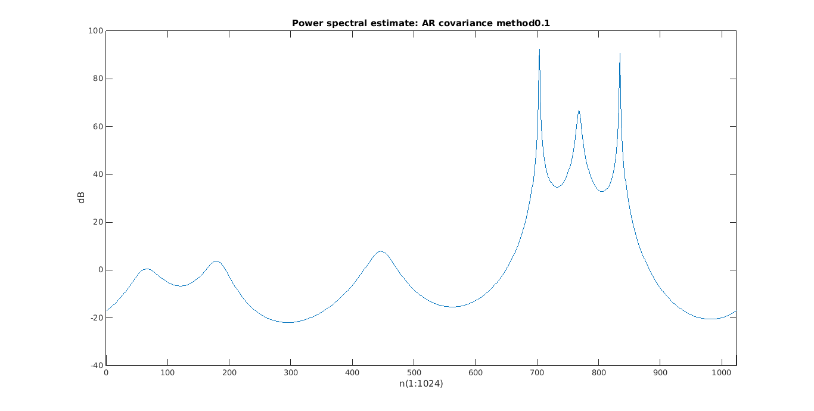 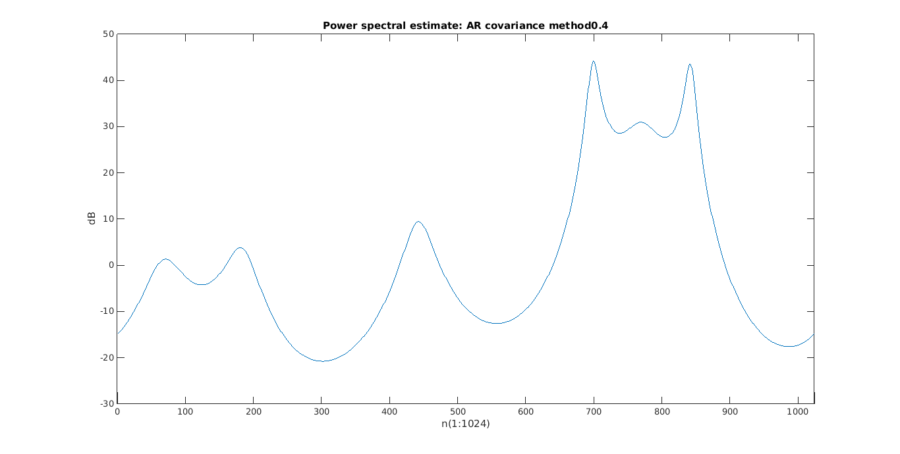
b)iii) MUSIC method
Compute 8x8 autocorrelation matrix for this method using covariance method. Compute Eigenvectors of the 8x8 Matrix Since noise space = 5. we extract smalled 5 eigenvecs Obtain the noise subpsace and compute pseudo-specturm
for k = 1:length(noise_vals_k) x = input_data(:,k); MUSIC_psd = MUSIC_spectrum(x,7,3,noise_vals_k(k)); figure('units','normalized','outerposition',[0 0 1 1]); plot(20*log10(MUSIC_psd)); title(['Power spectral estimate: MUSIC method ',num2str(noise_vals_k(k))]) ylabel('dB') xlabel('n(1:1024)') xlim([0 1024]) end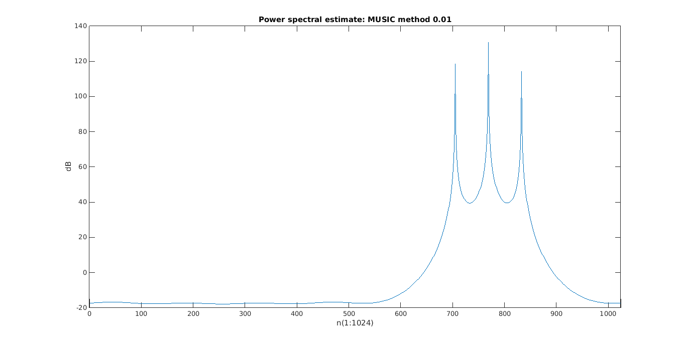 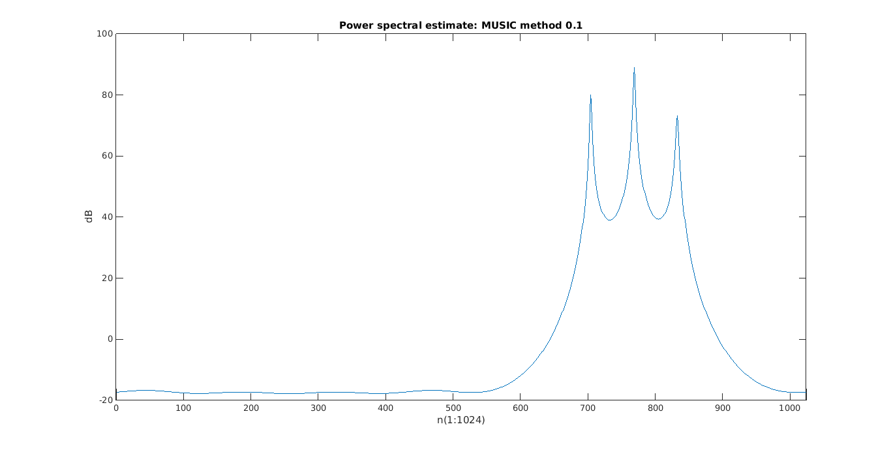 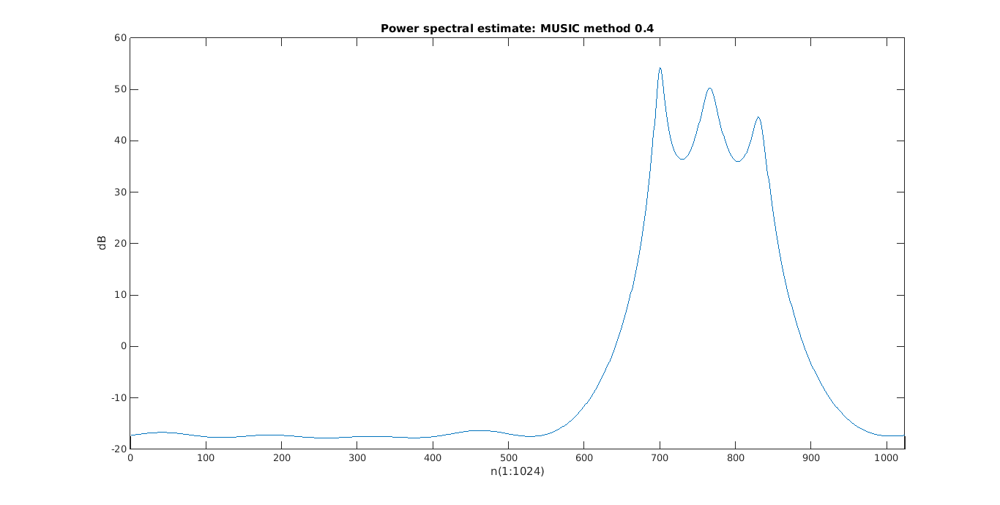
b)iv) Min-norm method
Compute vector u having the min norm Use u to compute the Power spectrum
for k = 1:length(noise_vals_k) x = input_data(:,k); minimum_norm_psd = minimum_norm_spectrum(x,7,3,noise_vals_k(k)); figure('units','normalized','outerposition',[0 0 1 1]); plot(20*log10(minimum_norm_psd)); title(['Power spectral estimate: Min-Norm method ',num2str(noise_vals_k(k))]) ylabel('dB') xlabel('n(1:1024)') xlim([0 1024]) end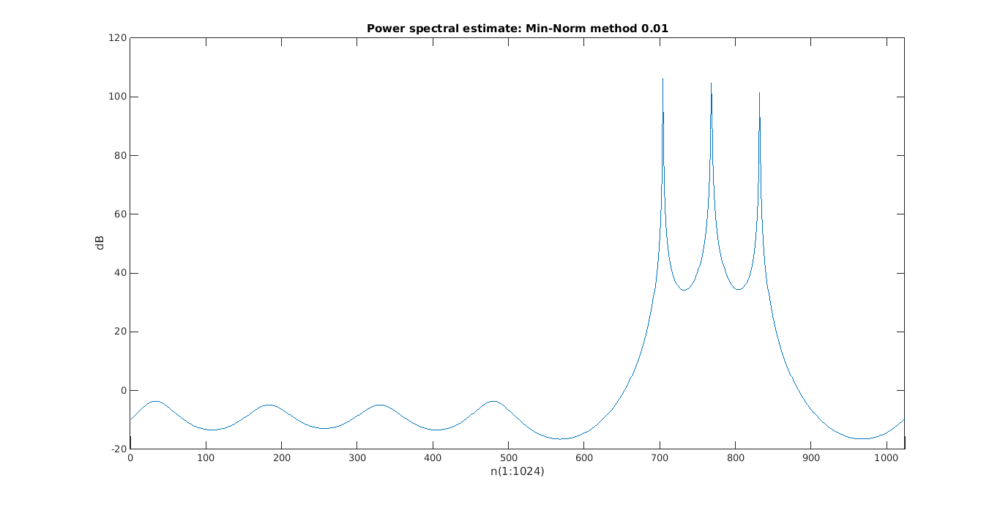 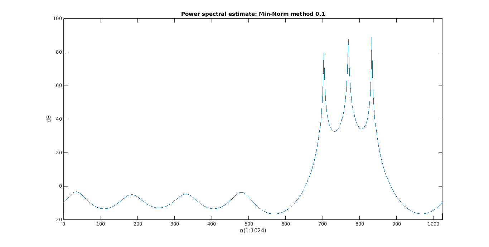 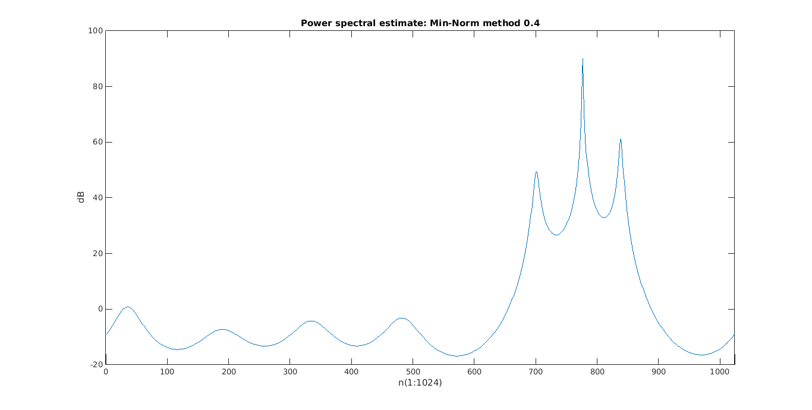
Comparison of PSD estimate plots
for k = 1:length(noise_vals_k) x = input_data(:,k); AR_autocorr_psd = AR_autocorrelation_spectrum(x,7,noise_vals_k(k)); AR_covar_psd = AR_covariance_spectrum(x,7,noise_vals_k(k)); MUSIC_psd = MUSIC_spectrum(x,7,3,noise_vals_k(k)); min_norm_psd = minimum_norm_spectrum(x,7,3,noise_vals_k(k)); prdgrm_psd_norm = normalize_psd(periodogram_psd); AR_autocorr_psd_norm = normalize_psd(AR_autocorr_psd); AR_covar_psd_norm = normalize_psd(AR_covar_psd); MUSIC_psd_norm = normalize_psd(MUSIC_psd); min_norm_psd_norm = normalize_psd(minimum_norm_psd); % Unnormalized plots of PSsD estimates plots = 20*log10([periodogram_psd,AR_autocorr_psd,AR_covar_psd,MUSIC_psd,min_norm_psd]); figure('units','normalized','outerposition',[0 0 1 1]); plot(plots); title(['Absolute Power spectral estimates x :',num2str(noise_vals_k(k))]); ylabel('dB') xlabel('n(1:1024)') xlim([0 1024]) legend({'Periodogram', 'AR Autocorrelation', 'AR Covariance', 'MUSIC', 'Min-Norm'}, 'Location', 'SouthEast') % Normalized plots of PSD estimates norm_plots = 20*log10([prdgrm_psd_norm,AR_autocorr_psd_norm,AR_covar_psd_norm,MUSIC_psd_norm,min_norm_psd_norm]); figure('units','normalized','outerposition',[0 0 1 1]); plot(norm_plots); title(['Relative Power spectral estimates x :',num2str(noise_vals_k(k))]); ylabel('normalized dB') xlabel('n(1:1024)') xlim([0 1024]) legend({'Periodogram', 'AR Autocorrelation', 'AR Covariance', 'MUSIC', 'Min-Norm'}, 'Location', 'SouthEast') end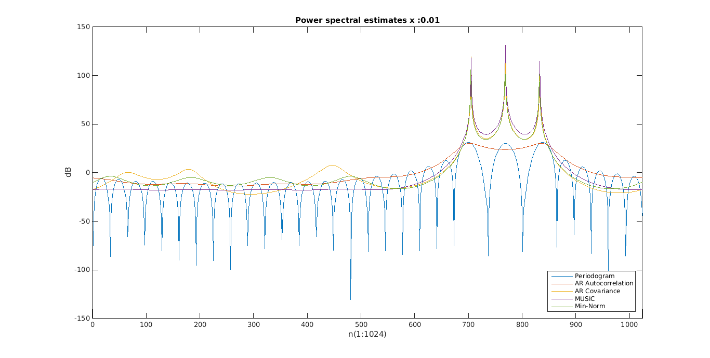 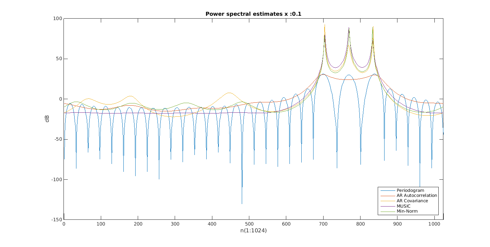 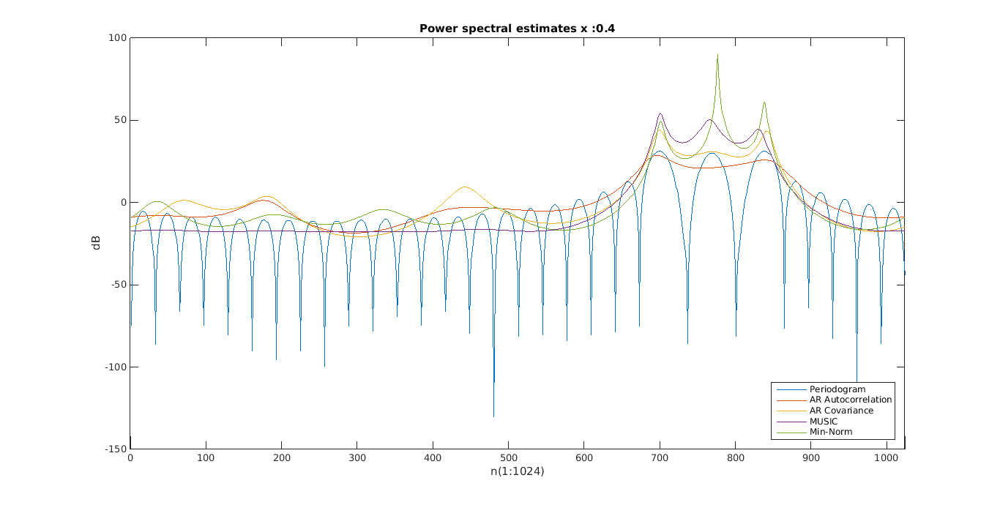 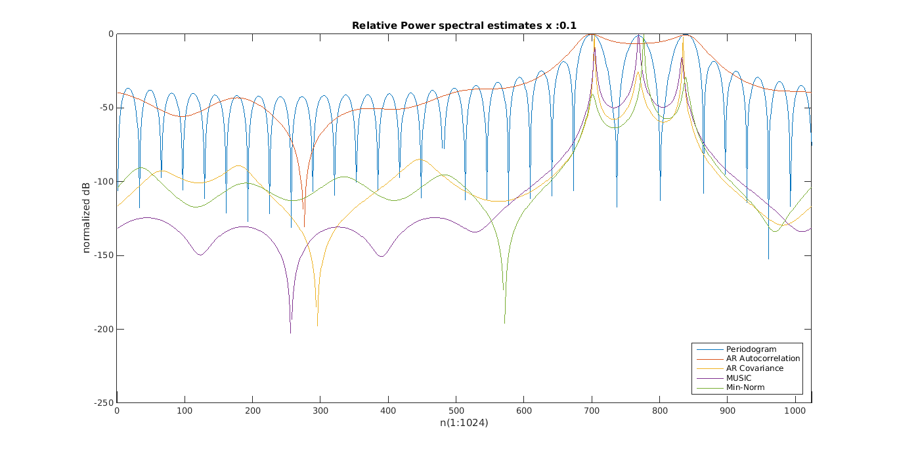 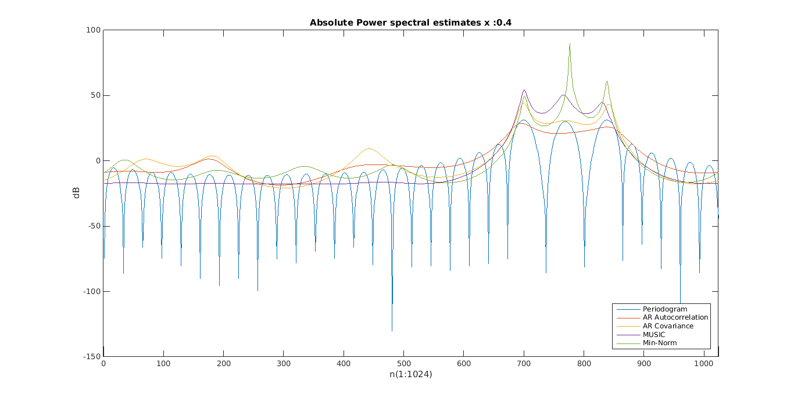 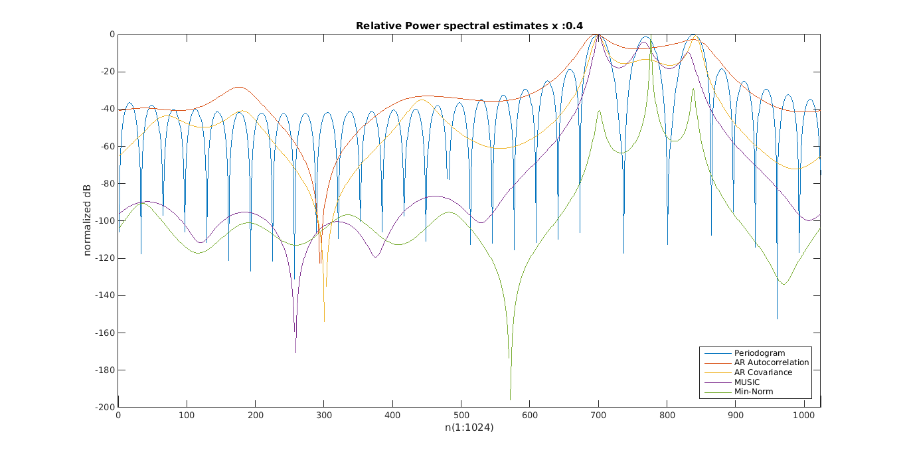
Comparison Study and Analysis
The periodogram has multiple peaks due to the rectangular windowing. However the largest peaks are at expected maximal positions.s
The AR autocorrelation method shows 2 small non-prominent wideband peaks with no so great accuracy. This is due to order limitations.
The AR covariance method gives a good spectral estimate with 3 constricted peaks the locations near the correct value and small lobes. There are unsual spikes along the spectrum with lower and non-prominent peak values.
The MUSIC method also gives 3 narrowband peaks at the same place as the AR Covariance method. One improvement over AR covariance is that other insignificant peaks along the spectrum are eliminated due to averaging over entire noise space.
Min-norm method also gives 3 narrowband peaks at the same place as the AR Covariance method. The optimal min-norm vector calcuated gives highly acuurate peaks but fails to eradicate undesired non-prominent peaks along the spectrum as in MUSIC. However, given the lower computational cost over MUSIC and the extremely less isignificant peak values compared to AR covariance, Min-norm performs very well in spectrum esitmation.